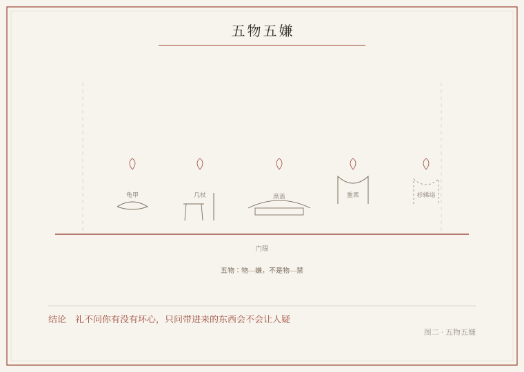

曲礼下 · 二·十八 · 第 141 课
臣之龟策、几杖、丧车之席盖、衣裳皆素的丧服、单层的葛衣，皆不得入公门。五物五种「嫌」，注逐条点出。
说什么事：龟策、几杖、席盖、重素、袗絺绤，不入公门。
落在哪一层：仪，兼及礼意。论「携带何物」也是身份语言。
为何编在此位：上节罚君前临时，此节禁入门携带。一在庭内，一在门限。
【经】龜筴、几杖、席蓋、重素、袗絺綌，不入公門。
【注】龜筴，嫌問國家吉凶。几杖，嫌自長老。席蓋，載喪車也。《雜記》曰：「士輤，葦席以為屋，蒲席以為裳帷。」重素，衣裳皆素，喪服也。袗，單也。孔子曰：「當暑，袗絺綌，必表而出之。」為其形褻。
【疏】「龟策」者，谓臣之龟策也。将入，嫌问国家吉凶。「几杖」者，臣之几杖也。若将入，谓欲骄矜，嫌自长老。……「袗絺绤」者，袗，单也。絺绤，葛也。上无衣表，则肉露见，为不敬，故不著入也。
龟策 卜筮之具。注「嫌问国家吉凶」：非禁其物，禁其疑。
几杖 凭几与杖。注「嫌自长老」：君前无自居长者之理。
席盖 注「载丧车也」。丧车之覆，非坐席。
重素 注「衣裳皆素，丧服也」。重者，上下皆素。
袗絺绤 注「袗，单也」。絺绤为葛，单衣无表则形亵。
形亵 注语。形者，体也；亵者，近也、慢也。
臣下的龟策、几杖、丧车的席盖、上下皆素的丧服、单层的葛衣，都不带进公门。
五件东西各有一个「嫌」字。礼不问你有没有坏心，只问你带进来的东西会不会让人疑。此节把「嫌疑」当成一种需要预防的实体。
第一层 五物五嫌 龟策嫌问吉凶，几杖嫌自长老，席盖嫌丧，重素嫌凶，袗絺绤嫌亵。全节的结构是「物—嫌」，不是「物—禁」。
第二层 禁的是带入，不是使用 公门之外，龟可卜、几可凭、杖可持。界只画在门。
第三层 例外见义 疏云：尸乘以几至庙门，八十杖于朝，则几杖得入。礼的禁皆有例外，例外处正见其所重。
第四层 单衣之禁最细 盛暑著葛，本无不可；所禁者「上无衣表」。同一件衣，有表则入，无表则不入。礼细到此。
与今日何干 带着情绪、带着立场、带着未公开的消息进会议室，与「龟策入公门」同类：不是不能有，是不能带进去。
| 左 | 右 |
|---|---|
| 龟策不入公门 | 嫌问国家吉凶 |
| 几杖不入公门 | 嫌自长老 |
| 席盖不入公门 | 丧车之覆，嫌凶 |
| 重素不入公门 | 衣裳皆素，丧服 |
| 袗絺绤不入公门 | 单而无表，形亵 |
| 八十杖于朝则得入 | 禁有例外，例外见义 |
画一道门限（横贯画面下部的一道粗线），门外并排陈列五件物：一枚龟甲、一张小几与一根杖、一片席与一顶盖、一件上下皆素的衣、一件单薄的葛衣。五件物皆止于门限之外，不越线；门限之内空无一物。每件物上方各画一枚小小的问号状的弯钩（不写字）。门内以极淡的竖线示门框。赭色只用在门限那道线上。
